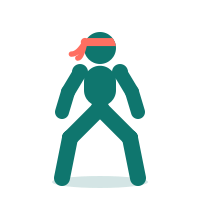
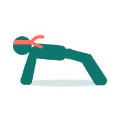
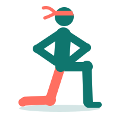
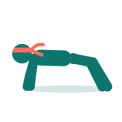
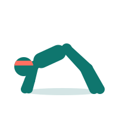

Quiet morning · legs, push, core
~10 min8 movesNo kit
Warm-up · 4 moves ▸2 min · no rests
Work · 40s each · 20s rest

Squat
40s

Push-up
40s

Reverse lunge (right)1
right leg steps back

Plank
40s
Reverse lunge (left)2
left leg steps back
Push-up
40s
Squat
40s

Glute bridge
40s
Proposal: coral = the leg that steps back
Start Day A